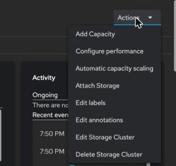
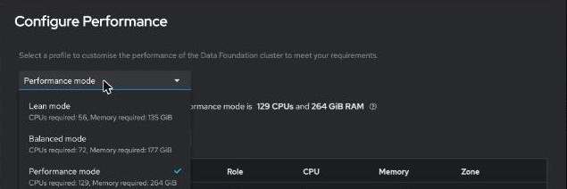
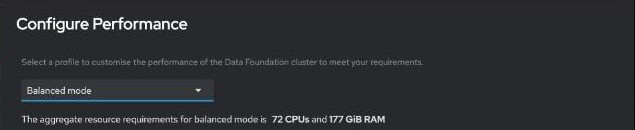

How fast is the storage?
By the end you can say why a write costs more than a read, read what one lab run measured and under which conditions, and plan how to measure your own storage.
Northgate Freight is a made-up company. Its database team asks one thing before it moves: how fast is the disk? This unit gives you real numbers, and says plainly why you must not reuse them.
Every figure in this unit comes from one lab run and is quoted with the conditions of that run. No expected figures are published, and none are given here. The review question repeats one from unit 2.2.
Why a write costs more than a read
ODF keeps three copies. Every write to a VM disk is replicated, typically three times, before it is acknowledged.
A guest does one 4 KB write. How much is written across the OSDs?
Show the answer
This is write amplification. The write is not acknowledged until the primary OSD and at least one replica confirm it.
Which OSD serves a read?
Show the answer
Reads are served from the primary OSD only, so read latency is close to a single NVMe access.
Three measured results
All three come from one fio VM on one lab cluster, with other VMs running. Predict each, then read the figures and what they do not show.
Two 20 GiB disks on the same class, one Block and one Filesystem. Which gave more read IOPS on a 4k random 70/30 job, three runs each?
Show the answer
Block was not the faster disk.Filesystem gave 63,110 read IOPS against 47,411 for Block. Its queue-depth-1 latency was slightly worse: read p50 458 µs against 376 µs, and its queue-depth-1 write p99.9 varied from 4 ms to 36 ms between runs. No host-side measurement was taken. Use Block for VM disks on this class, but not for speed: it is the class default, and RWX Block lets a VM live migrate.
A 4-vCPU VM with four busy Block disks, one fio job per disk (4k random 70/30, queue depth 32), gave 65,053 IOPS in total with no IOThreads. What after ioThreadsPolicy: auto and a restart?
Show the answer
It gave 97,012 IOPS, three runs each, and the ranges did not overlap. The domain showed two IOThreads, with the disks alternating between them. On one busy Block disk the same VM gave 43,506 IOPS with no IOThreads and 47,039 with auto, and those ranges overlap. By default a VM has no IOThread.
The same VM and disk under the ODF performance profile and then under balanced, with the 4k random 70/30 job at queue depth 32. How does the p99 read latency change on balanced?
Show the answer
Under performance the read IOPS were 45,576 and 47,309, and the p99 read latency was 3.3 ms in both runs. Under balanced they were 36,764 read IOPS and 22.9 ms: about 20% fewer IOPS, and a p99 about seven times higher. With one request at a time (queue depth 1) nothing changed. This is one VM, one disk and one cluster, and the run did not look at OSD CPU, so it does not show why.
Watch for this. These are the figures of one run. They are not expected values for your cluster. The measure-it-yourself step comes later in this unit.
Change the resource profile
The resource profile sets how much CPU and memory ODF reserves for the Ceph daemons. It does not change Ceph's data path. These screens come from a lab cluster with 24 OSDs. Click where you would click. After two misses the right place is marked.

You are on the Storage cluster page of Data Foundation, with the Actions menu open. Which entry changes the profile?
Show where
Right. Configure performance. Red Hat names this route for a bare metal deployment, and it worked on a lab cluster.

Which profile needs the most CPU and memory for this cluster's 24 OSDs?
Show where
Right. Performance mode needs 129 CPUs and 264 GiB. Balanced mode needs 72 CPUs and 177 GiB, and lean mode 56 CPUs and 135 GiB. The performance entry is ticked, so it is the profile in use.

After you save Balanced mode, which line shows what the profile needs?
Show where
Right. The aggregate line: 72 CPUs and 177 GiB RAM. Saving changed the StorageCluster at once, and the OSD pods restarted. On the lab cluster it read Ready about eight minutes after the save, with Ceph healthy. Each change restarts the OSDs.
Measure your own: four fio jobs
Compare against your own vSphere VM, not against a table. Run the same four jobs on both, changing only the device path. Select a job to see what it answers. You can also click a line.
Job 1: random read and write
Small blocks, queue depth 32, four jobs, 70% reads. Queue depth 32 measures how much the system can absorb.
Job 2: one outstanding read
Queue depth 1 measures latency. Record the 99th percentile, not only the average.
Job 3: one outstanding write
Also queue depth 1. This is what a database commit feels.
Job 4: large sequential read
1 MiB blocks. The four jobs ran three times each against a Block virtio, a Filesystem virtio and a Block scsi disk, 20 GiB each, after one full write pass. This job gave 2,558, 2,721 and 2,472 MiB/s respectively. That is one VM on one lab cluster in one run.
DEV=/dev/vdb # the empty test disk. CHECK IT. # 1. Random read and write at small blocks: the IOPS question sudo fio --name=rand4k --filename=$DEV --direct=1 --ioengine=libaio \ --rw=randrw --rwmixread=70 --bs=4k --iodepth=32 --numjobs=4 \ --time_based --runtime=120 --ramp_time=20 --group_reporting # 2. Single outstanding read: the latency question sudo fio --name=lat-read --filename=$DEV --direct=1 --ioengine=libaio \ --rw=randread --bs=4k --iodepth=1 --numjobs=1 \ --time_based --runtime=120 --ramp_time=20 \ --percentile_list=50:90:99:99.9 # 3. Single outstanding write: what a database commit feels sudo fio --name=lat-write --filename=$DEV --direct=1 --ioengine=libaio \ --rw=randwrite --bs=4k --iodepth=1 --numjobs=1 \ --time_based --runtime=120 --ramp_time=20 \ --percentile_list=50:90:99:99.9 # 4. Large sequential: the throughput question sudo fio --name=seq1m --filename=$DEV --direct=1 --ioengine=libaio \ --rw=read --bs=1M --iodepth=16 --numjobs=1 \ --time_based --runtime=120 --ramp_time=20
Watch for this. fio writing to a raw device destroys the data on it. Use a new, empty data disk, never the root disk. Check the device name with lsblk before every run. Run one write pass over the whole device before the read jobs.
From vSphere: fio plays the role that vscsiStats or HCIBench play. It measures from inside the guest, so it includes everything between the guest and the disk.
Four questions
The Northgate database team asks what IOPS a ROVS disk will give. What is the honest answer?
Show the answer
IOPS and latency depend on your hardware, your ODF version and your workload. The chapter gives no expected number. Compare a ROVS VM against your own vSphere VM, with the same block size, queue depth, job count, runtime and device size, and repeat each run at least three times.
Which disk do you point fio at?
Show the answer
fio writing to a raw device destroys the data on it. Use a new data disk and check the name with lsblk first.
An admin wants a per-disk IOPS cap, as vSphere offers per VMDK. What exists on ROVS?
Show the answer
The disk has no throttle field, and no Red Hat or IBM page says per-PVC IOPS limits are set in the ODF console. Keeping a noisy workload from its neighbours takes its own disks or its own cluster, with capacity sized for it.
Review from unit 2.2. Which layer turns the guest's disk I/O into I/O against the host's block device?
Show the answer
QEMU runs in the virt-launcher pod and translates guest I/O into host-level I/O against the RBD block device. The VirtIO driver only passes the requests to QEMU.
You know how to ask about speed
A write costs three. Lab figures are not your figures. Measure with the same four fio jobs, on an empty disk, against your own vSphere VM.
Tutorial chapter 78, Measure and tune ODF storage performance for ROVS VM disks, has the full procedure, every figure and what was not tested.